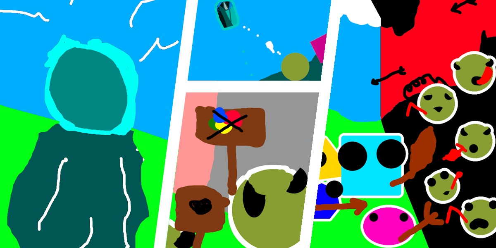
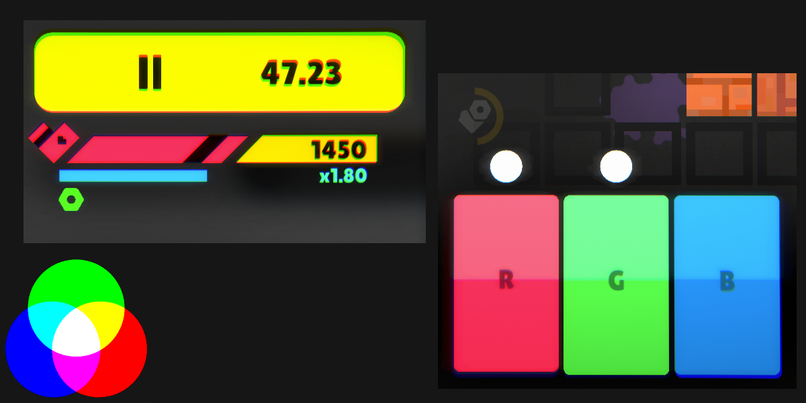
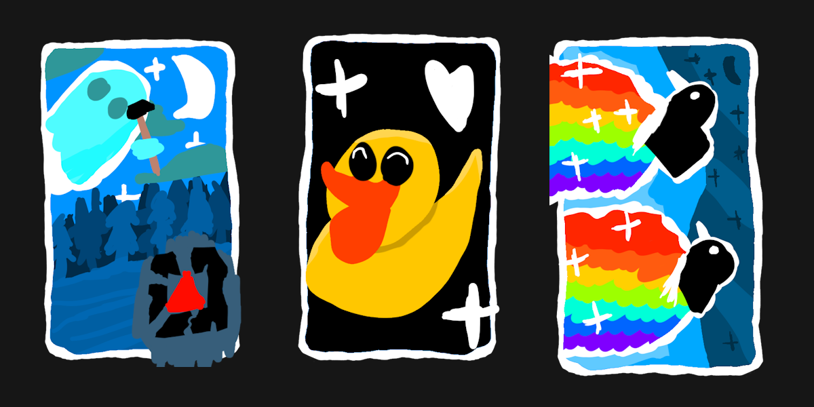
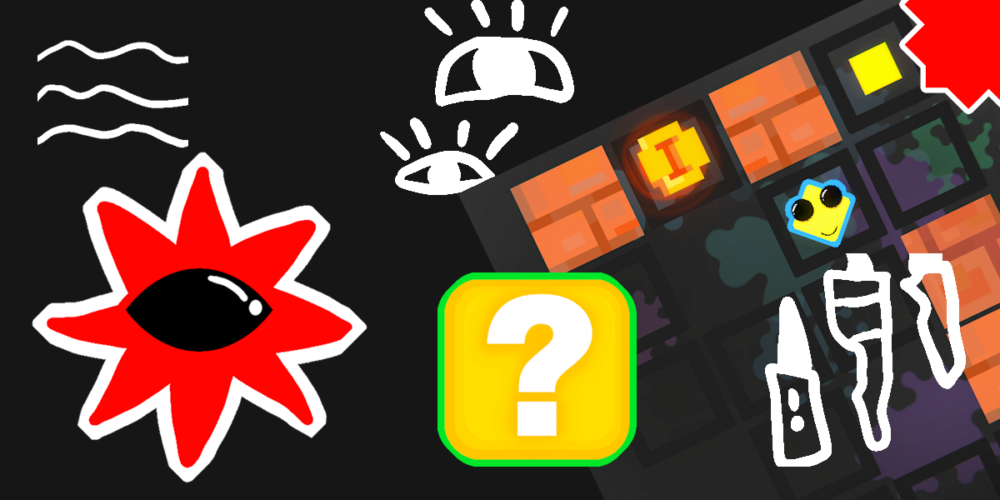
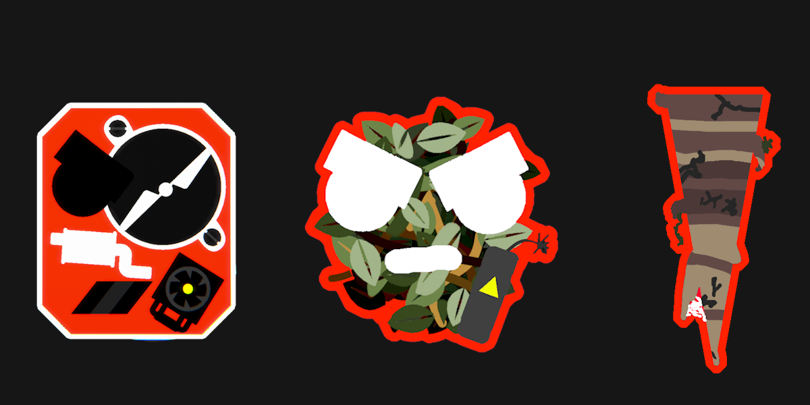

Story

Image shown is concept art
The realm once knew peace, but chaos has since taken hold. A mysterious corruption—a dark thought—infected the minds of the people, dividing society into those who loved color and those who despised it. The civil war ended in tragedy: the 'Color Haters' won. They erased all vibrancy, painting the world into a bleak void. Now, it falls to you and your fellow Painters to restore the hues of life, battling these Color-Hater Goblins and their creations.
Master the Spectrum

Your palette consists of three vital switches: Red, Green, and Blue. As a Painter, you must blend these lights to reveal the truth. Toggle the switches to mix colors like Yellow or Purple, and bring the corrupted tiles back to their original, colorful state.
Your Tools to fight

A true artist needs the right tools. Adapt to the chaos by collecting a vast array of Passive and Active abilities that change with every run. Automate your progress with the 'Spirit Buddy,' shield yourself with 'D.U.C.K,' or turn the tide of battle using powerful Actives like the 'Mystic Mustangs' to clear entire rows instantly. Whether you manipulate time or unleash raw power, your build will determine your survival.
An Ever-Changing Canvas

Embrace the chaos of a true Roguelike experience where no two runs are ever the same. Driven by an intelligent Adaptive System, the game constantly monitors your journey, ensuring a diverse roster of enemies and a difficulty curve that evolves with your skill. With procedurally generated maps, randomized ability pools, and unpredictable Level Modifiers, every session offers a fresh puzzle to solve and new dangers to overcome.
Meet the Enemies

The Color Haters didn't come alone. They brought a twisted menagerie designed to undo your work and end your run. You'll face purely destructive forces like the Color Mower, which devours your painted tiles, and explosive hazards like Boom Moss that shatter the grid. Watch your step—death comes from above in the form of falling Dripstones, and others. From the arrow-slinging Bowblins to the erratic Crocolor, every monster demands a unique strategy.
Press Kit
For screenshots and other promotional content please check out our press kit.